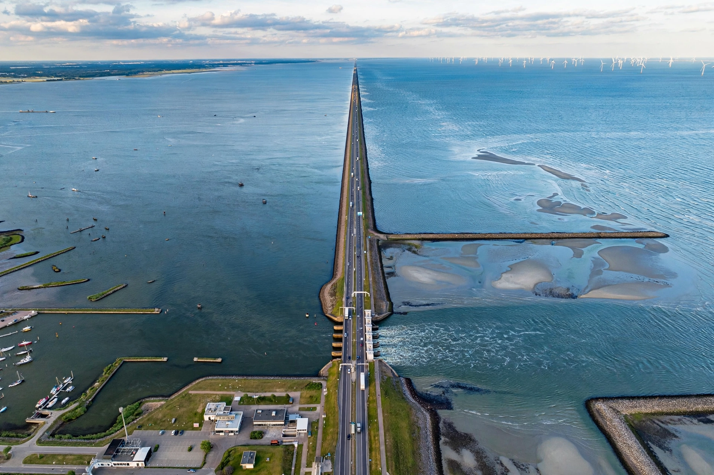

Afsluitdijk
From Wikipedia, the free encyclopedia
| Afsluitdijk | |
|---|---|
| Carries | Motorway, bicycle path |
| Crosses | IJsselmeer / Wadden Sea |
| Length | 32 km (20 mi) |
| Opened | 1932 |
| Designer | Cornelis Lely |
The Afsluitdijk (Dutch pronunciation: "Enclosure Dam") is a major dike and causeway in the Netherlands, constructed between 1927 and 1932. It runs from Den Oever in North Holland province to the village of Zurich in Friesland province, a distance of 32 kilometres (20 mi), separating the IJsselmeer from the Wadden Sea.

Aerial view of the AfsluitdijkHistory
The dam was the culmination of plans by engineer and minister Cornelis Lely to tame the Zuiderzee, a shallow, storm-prone inlet of the North Sea that had repeatedly flooded Dutch coastal towns. The Zuiderzee Act of 1918 authorised the project, and construction began in 1927. The final gap was closed on 28 May 1932.
Effects
The dam turned the salt-water Zuiderzee into the freshwater IJsselmeer. Behind it, large tracts of land were reclaimed as polders, creating the new province of Flevoland and the Noordoostpolder. Two sets of locks, at Den Oever and Kornwerderzand, allow shipping to pass and regulate water levels.
Modernisation
In the 2010s and 2020s the Afsluitdijk underwent a major reinforcement and renewal programme, raising the dike to meet modern flood-safety standards, adding fish-migration passages, and installing the iconic Afsluitdijk Wadden Center at Kornwerderzand.